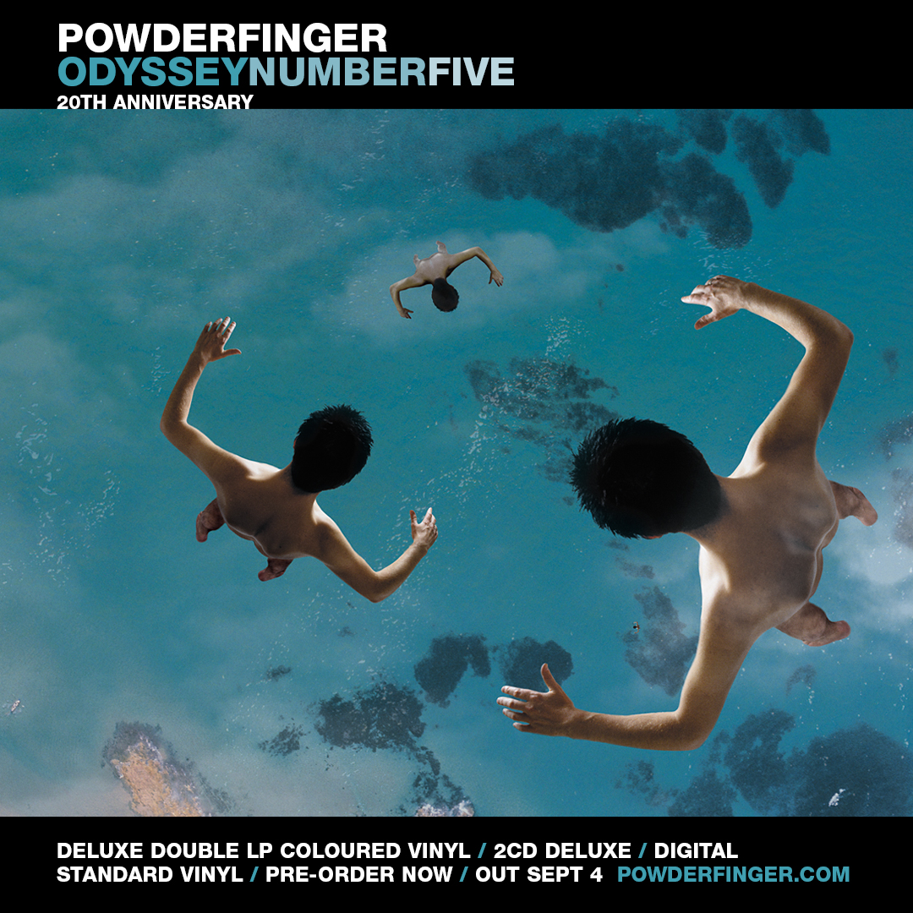
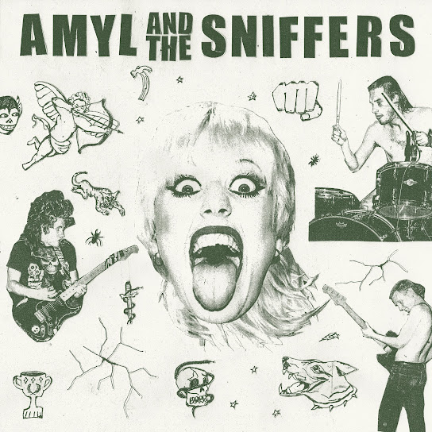
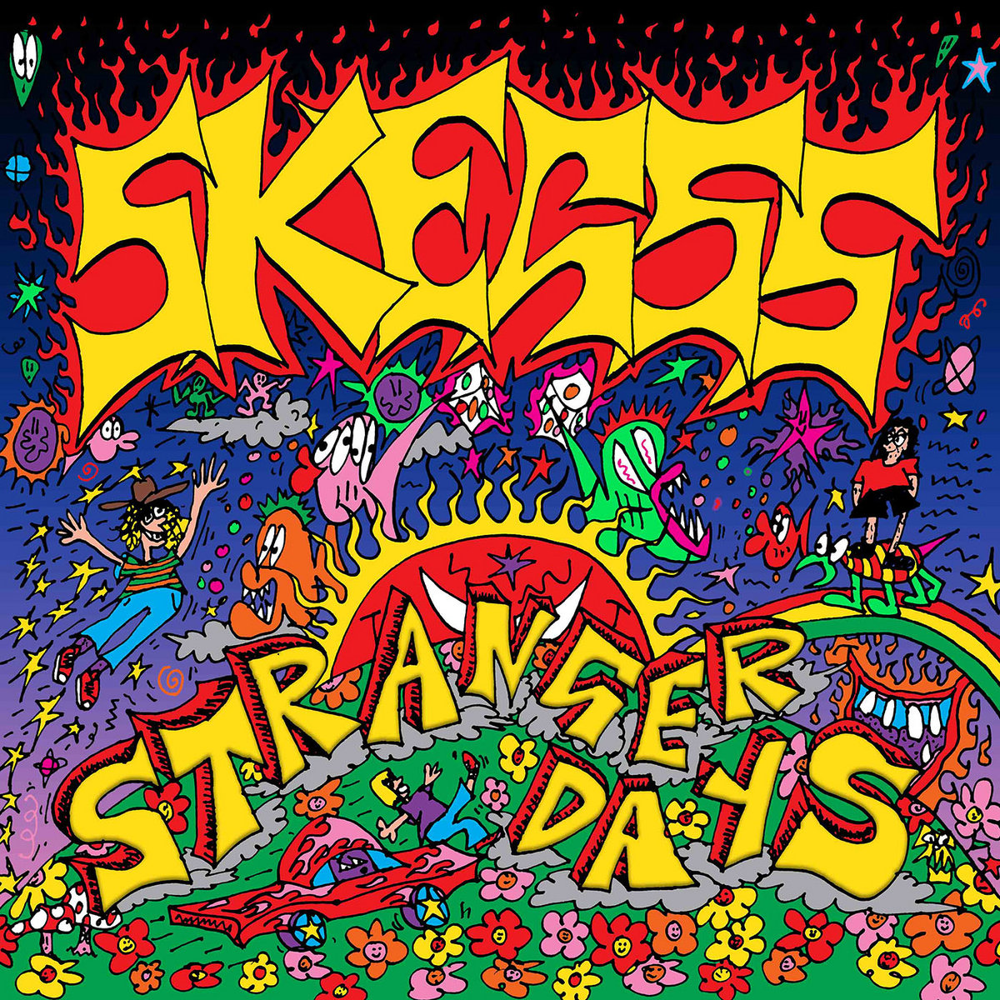

New Australian Artists
In order to understand the influence the Australian rock movements and waves had on modern music, it is important to examine new and emerging Australian artists within the genre. Here is a small list of significant Australian bands and artists that are producing new rock music for the country:


